The Music Life
Barrett Holt wasn't just a fan watching from the audience—he was in the industry. As a Concert Promoter, Morning Radio Personality, and Disc Jockey, Barrett lived and breathed country music from the inside. He picked up a guitar at age 7, formed his first band in grammar school, and spent decades as a songwriter and musician. These weren't chance encounters with legends; they were the natural connections of someone working at the highest levels of country music. What follows is a visual record of those industry relationships, mentorships, and friendships that shaped a life dedicated to the craft.
Charlie Daniels Dear Friend
Charlie Daniels was more than a country music legend—he was a dear personal friend. These three moments capture the genuine warmth of a relationship built on mutual respect and shared love of music. From industry events to personal moments, Charlie's presence in Barrett's life represents the kind of deep friendships that defined his career in country music.
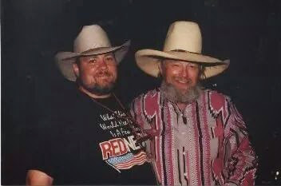
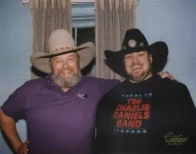
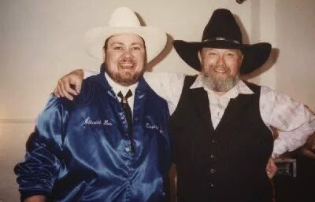
Randy Travis Junior High Classmate
Barrett and Randy Travis grew up together—they were classmates in junior high school. While their paths in country music would eventually cross at the highest levels of the industry, their connection ran deeper than any professional network. These photographs show reunions with an old friend who became a country music icon, yet never forgot where he came from.
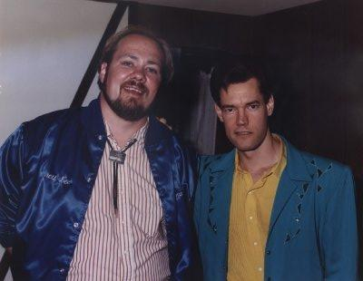
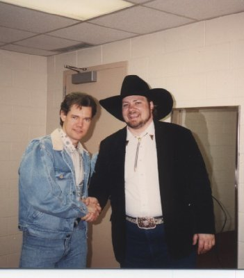
Radio Days
Barrett's radio career didn't start with a job posting or a talent search. It started the way most great things in his life did — with curiosity, a friend, and a room full of equipment that looked like the coolest thing on earth.
The License That Started It All
One of Barrett's best friends had a brother who worked at a radio station. One day they went to hang out, and Barrett took one look at the studio and thought it was just wicked cool. Before long he was bugging everyone at the station about how he could get in.
Back then — and this was a long time ago — you couldn't just sit down at a microphone. You had to study for and pass an FCC exam. Barrett hit the books, and before long he was holding his Third Class Radio Telephone Operator's License with Broadcast Endorsement. That was a really big deal. He earned his first slot: a four-hour Sunday show playing contemporary music — rock and roll, which fit right alongside his country roots.
Over the years, part-time weekends and fill-in gigs kept him in the mix — always on air, never full time. Real life required making a real living. But the airwaves kept calling.
The 50,000-Watt Shot
In the '80s, a local 50,000-watt radio station in southern New England made a bold move — it switched from contemporary to country. This was a genuinely big deal in that market. Country wasn't big in New England at the time. Barrett had been doing weekends on a 5,000-watt AM country station in the area, so he decided to stop by and ask some questions: what made them flip the format? Who were the DJs?
He was surprised to find that nobody in the building knew the first thing about country music. It was just weird. But also an opening.
They asked Barrett if he'd consider doing the 7 to midnight slot on weekends. He jumped on it. When the second Arbitron rating book came out, Barrett had the best numbers of any radio station in the area for that time slot. The rest moved fast: afternoon drive, and then the full morning show. Barrett had never done full-time radio before. He took the job anyway.
Top of the Morning — & a Check for the Kids
A couple of years into the morning gig, the local Providence paper published a "Top of the Morning" radio personality contest. No campaign required — they simply listed every morning host at every station and printed mail-in ballots. This was before the internet, of course, and the whole thing was for charity.
Barrett talked about it on air, showed up at sponsor events, and had fun with it. He wasn't expecting much. But the community responded, and he was very humbled to win second place — and very excited about what came with it.
The contest raised $3,250 for the new children's wing then under construction at Rhode Island Hospital — where, coincidentally, Barrett's sweetheart worked and where Barrett himself had worked for over a year after getting out of the Navy. He went to the hospital, gathered with a bunch of kids, and presented the check in person. The paper sent him a huge print-out of the moment as a keepsake.
That framed print still hangs in his home studio. A proud moment.
It wasn't a surprise that Barrett didn't win the top spot. The winner was an absolute legend — Salty Brine, who hosted the morning show on WPRO-AM from 1943 to April 28, 1993. A fifty-year run. When you're going up against that, second place is a win.
The Home Studio: Today Barrett's radio instincts live on in a fully equipped home studio — multiple computers, a sound mixing board, microphones and cameras, audio/video production gear, his guitars, a keyboard, and an "artist's corner" where he does the occasional acrylic painting. The framed Providence paper print hangs on the wall. The mic is always within reach.
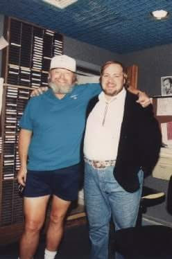
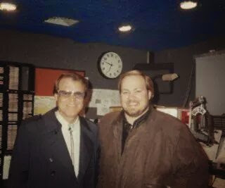
And More Legends of Country Music
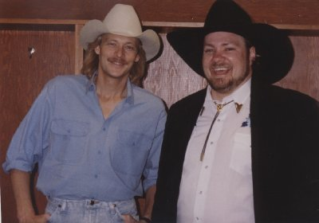
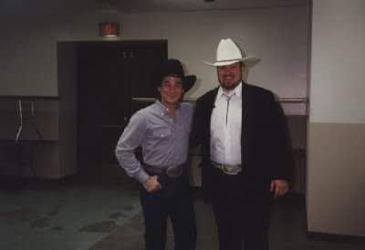
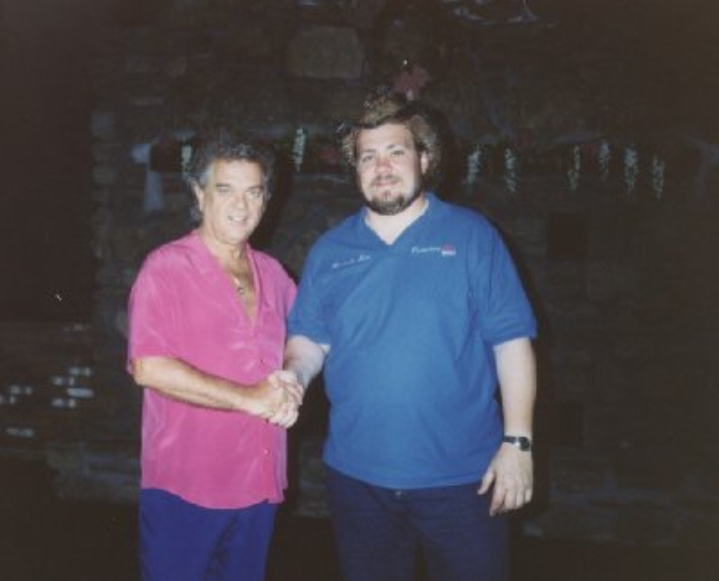
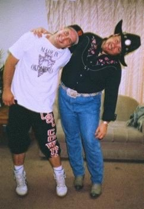
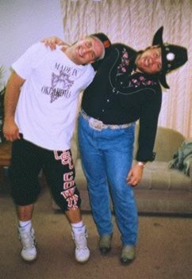
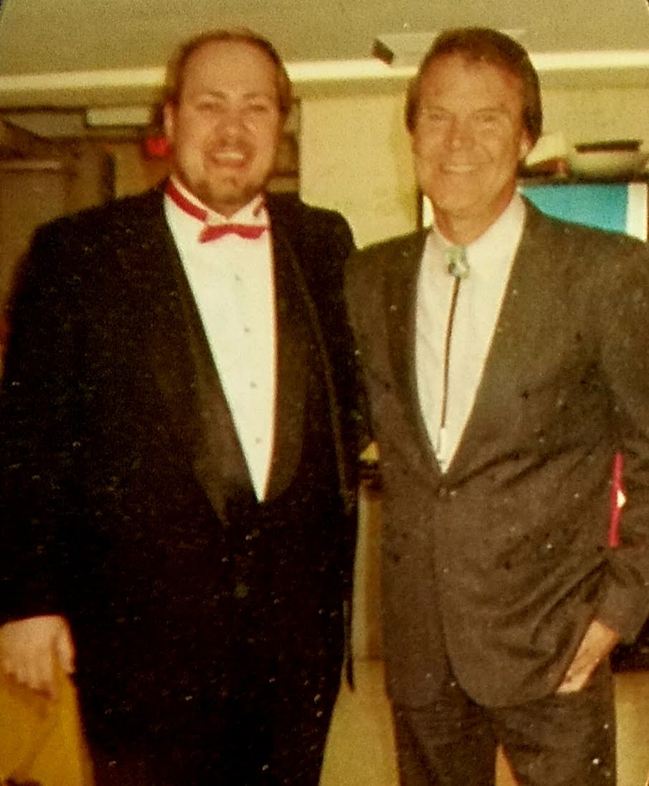
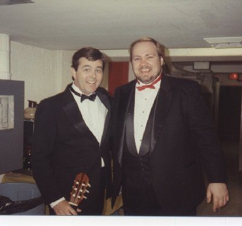
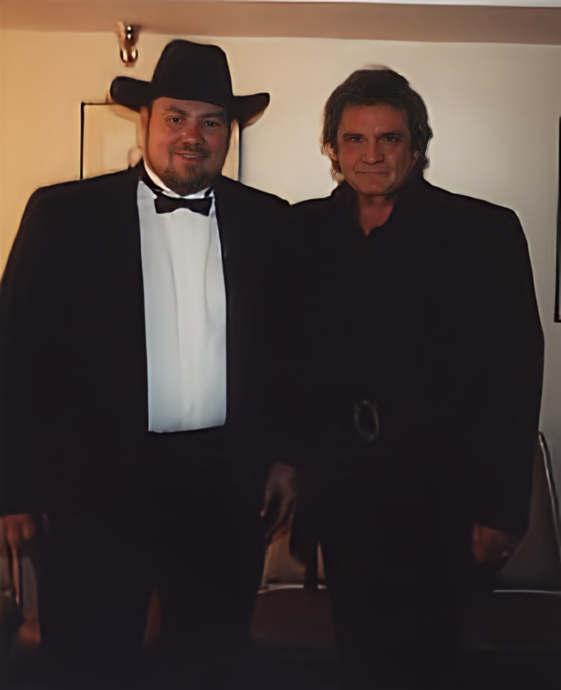
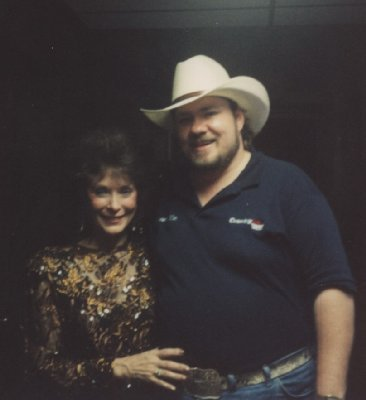
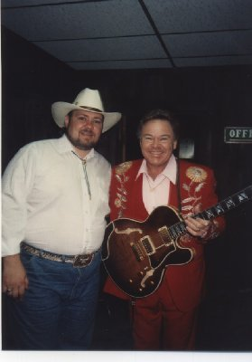
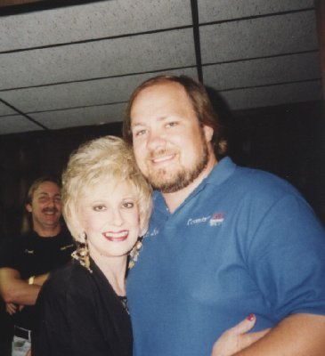
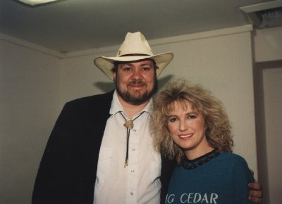
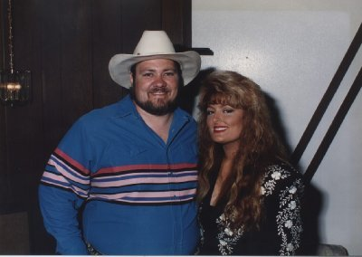
Beyond the Stage
Beyond the concert halls and radio studios, Barrett has lived a full and adventurous life. A passionate sailor, accomplished guitarist, and devoted to the outdoors, these images capture the man behind the industry credentials—someone who pursued excellence in every aspect of his life.
Sailing Adventures
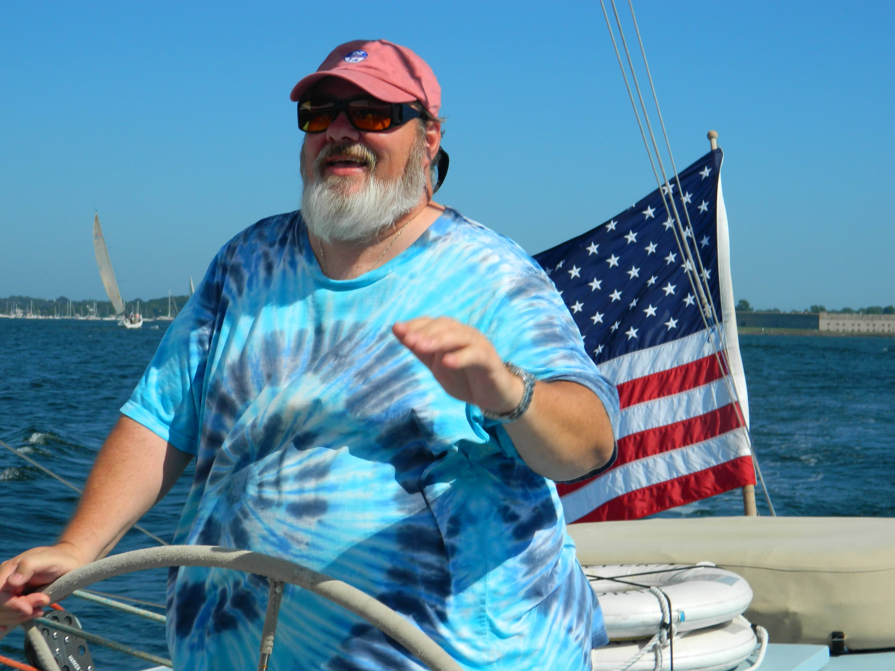
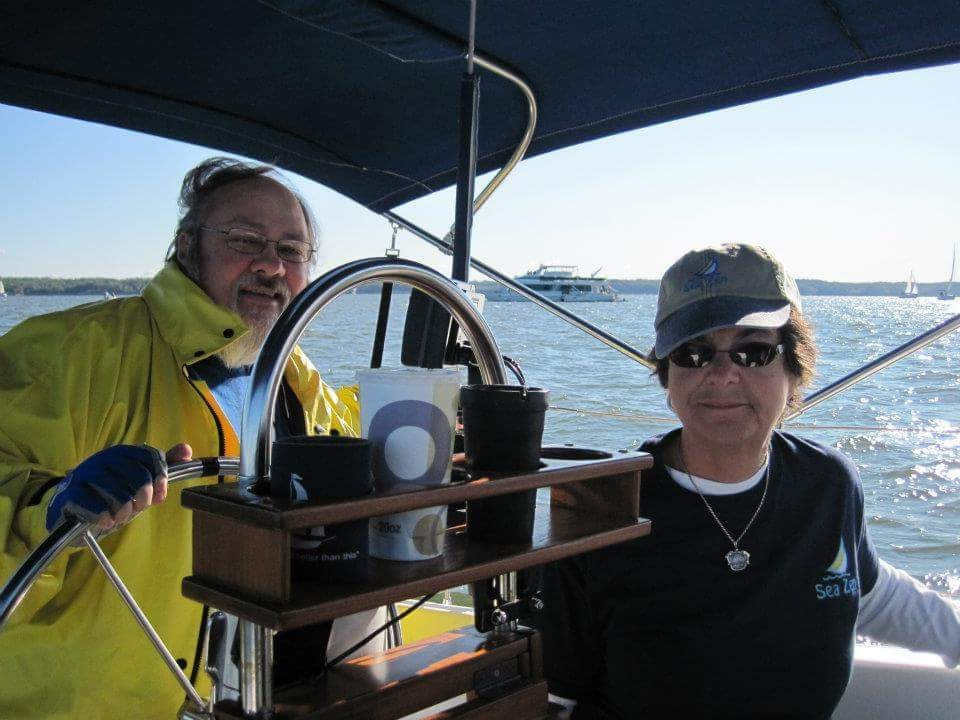
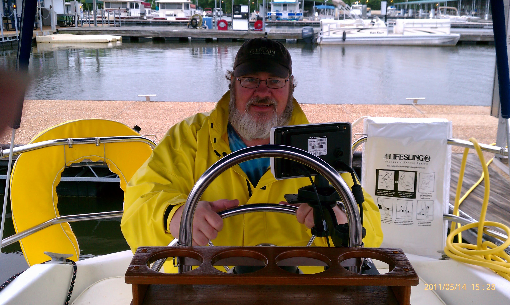
The Guitarist
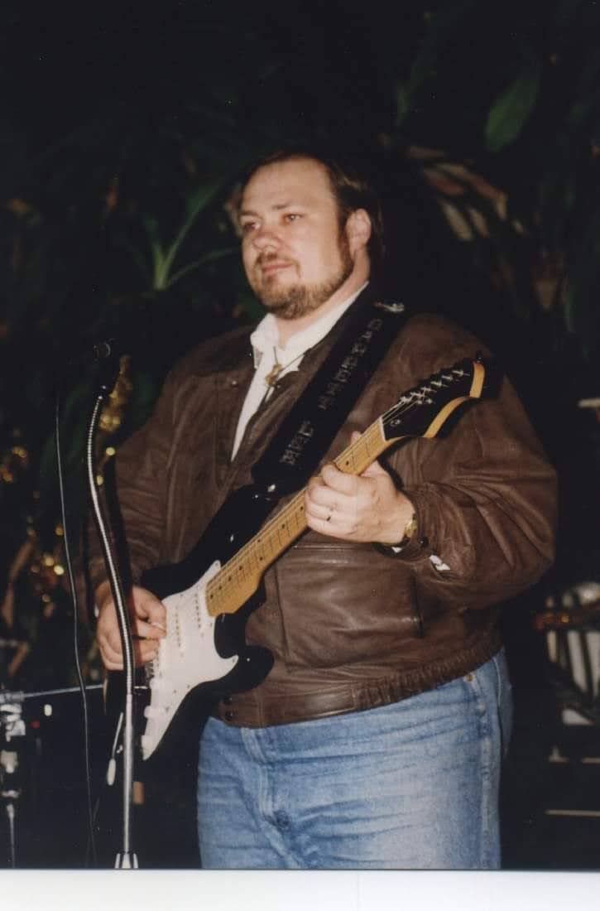
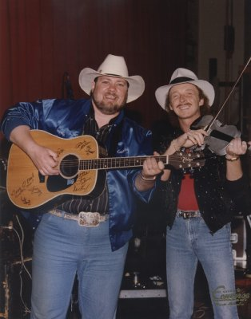
Love of Horsemanship
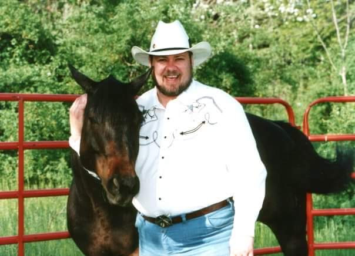
Additional Connections: Barrett has enjoyed a private tour of Graceland, connecting him to the roots of rock and roll, and has toured the historic Mount Vernon, reflecting his appreciation for American history and heritage. These experiences, combined with his decades in country music, paint a picture of a life richly lived.